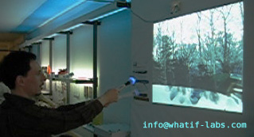
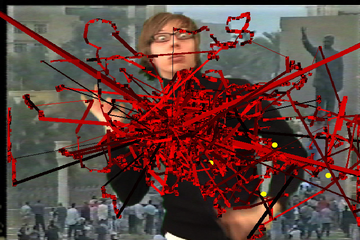
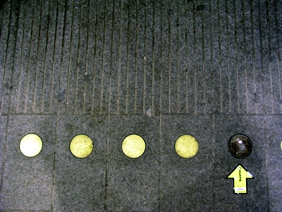

people doing strange things with electricity
The nine million and second dorkbot-nyc meeting took place on Wednesday, May 4th, 2005, 7pm at Location One in SoHo.
It featuring the lovely and talented:

Evan Raskob: SurroundScapes
SurroundScapes are an innovative approach to entertainment. Falling somewhere between video games and television, in terms of interactivity, they represent a new medium with its own set of rules for design, interaction, and content. Forms of entertainment like SurroundScapes could quite possibly become the largest form of entertainment media in the coming decade, outpacing movies, entertainment, and even television. Evan will talk about the possibilities of a new form of entertainment/interactivity, lay out some possible ground rules, and show some work that his team has done creating applications along these lines.
info at whatif-labs com
Jeremy Bailey: Total Symbiotic Art System
Jeremy will present documentation of the development of a TSAS (Total Symbiotic Art System), namely VideoPaint, a software program he's written that allows you to paint anywhere anytime. He will show examples from VideoPaint 1.0 and screen a series of performative journals documenting the development of VideoPaint 2.0
http://www.640480.com
 Brian House: Yellow Arrow
Brian House and friends discuss Yellow Arrow and how combining stickers with text-messaging can turn into a global public art project, urban game, and tool for collaborative experimental travel.
http://yellowarrow.net
Some images from the meeting are here.